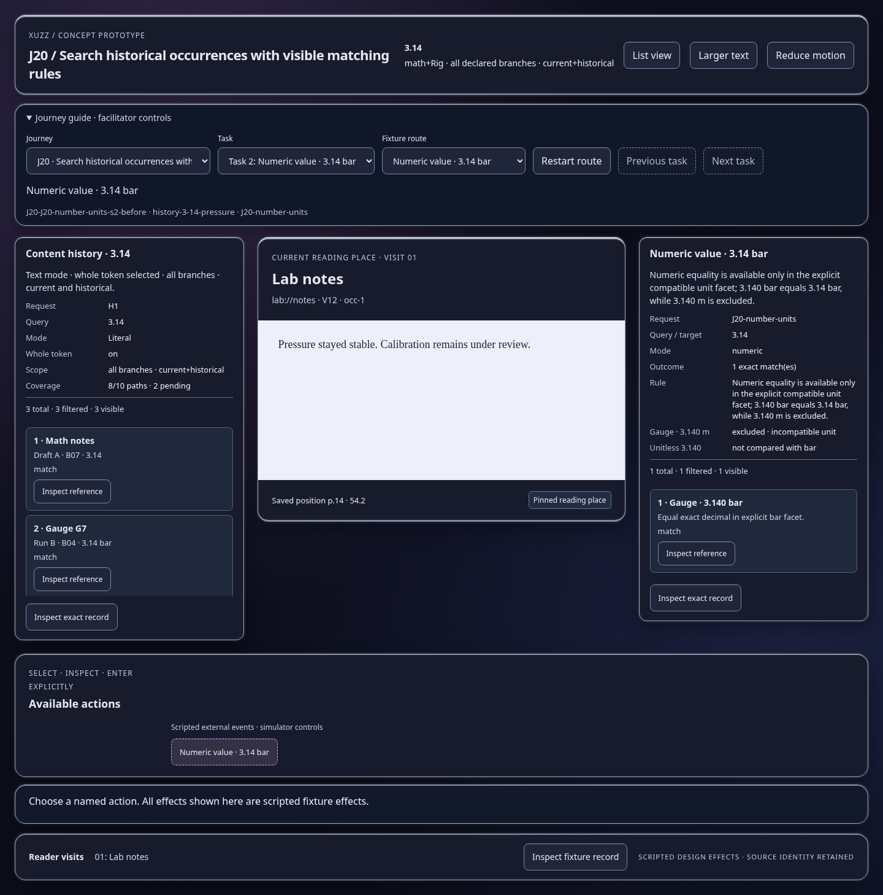
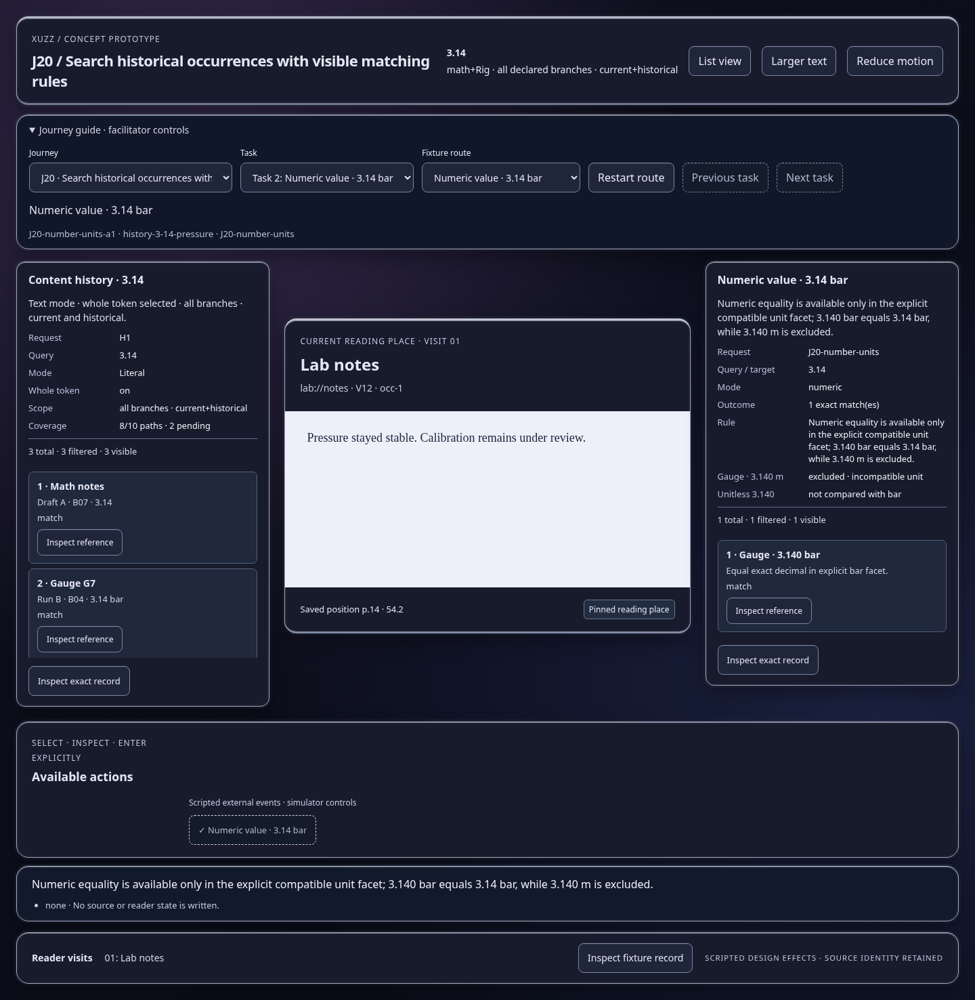

Scripted concept states; inspect the effect and identity trace. Images show actual prototype rendering.

Numeric equality is available only in the explicit compatible unit facet; 3.140 bar equals 3.14 bar, while 3.140 m is excluded.
Open this represented state